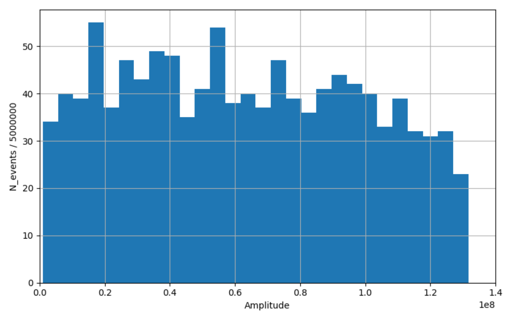

A0.
A1. The energy of the shower particles halves after every splitting length, so let us find after how many splittings the energy of a particle falls below the critical energy:
$$\log_2\frac{E_\gamma}{E_e^{\mathrm{crit}}} = 6.8 \;\Rightarrow$$A2. Let us calculate the radiation path length the shower has passed by the 7th splitting:
$$x_e = d_e\cdot n_{\max} = 175.7~\mathrm{g/cm^2}.$$In an atmosphere of constant density $\rho_0$ this radiation path length corresponds to the geometric distance
A3. Every splitting doubles the number of shower particles. Therefore
A4. At every splitting a photon turns into an electron–positron pair and disappears, while the electron and the positron each emit one photon. Hence the number of photons after a splitting equals the sum of the numbers of electrons and positrons before it, and the numbers of positrons and electrons each grow by the number of photons before the splitting. Let us tabulate the number of particles of each kind by generation:
| $n$ | 0 | 1 | 2 | 3 | 4 | 5 | 6 | 7 |
|---|---|---|---|---|---|---|---|---|
| $\gamma$ | 1 | 0 | 2 | 2 | 6 | 10 | 22 | 42 |
| $e^-$ | 0 | 1 | 1 | 3 | 5 | 11 | 21 | 43 |
| $e^+$ | 0 | 1 | 1 | 3 | 5 | 11 | 21 | 43 |
When the development of the shower stops there are $n_{e^-} = 43$ electrons in it. The total charge carried by the electrons is therefore
B1. The number of generations of the hadronic component is found in the same way as in A1, except that in a hadronic shower the energy of the particles drops 15 times at every splitting:
$$\log_{15}\frac{E_p}{E_\pi^{\mathrm{crit}}} = 2.2 \;\Rightarrow$$B2. In a hadronic interaction the energy of the particles drops 15 times, whereas in an electromagnetic one it drops 2 times. The number of generations is therefore largest when, apart from the first hadronic interaction (the proton breaks up and a $\pi^0$ meson splits into two photons), the shower develops electromagnetically from the start:
$$\log_2\frac{E_p/(15\cdot 2)}{E_e^{\mathrm{crit}}} = 11.4 \;\Rightarrow$$B3. The energy carried away by muons and neutrinos is the energy left in the charged pions $\pi^\pm$ when their energy falls below the critical value. In every hadronic interaction 6 of the 15 particles are neutral pions $\pi^0$, whose energy goes to the electromagnetic component; the other 9 of the 15 stay in the hadronic component.
The fraction of the energy left in the hadronic component when the hadronic shower stops developing (after $n^{\max}_{\mathrm{hadr}} = 3$ splittings) is therefore
$$\beta_{\mathrm{miss}} = \left(\frac{9}{15}\right)^{n^{\max}_{\mathrm{hadr}}} = \left(\frac{3}{5}\right)^3 = 0.216.$$All these charged pions later decay into muons and neutrinos, which carry this energy away. Therefore
C1. One hadronic interaction reduces the energy of a particle 15 times, which corresponds to $\log_2 15 = 3.9$ electromagnetic splittings. Reducing the energy 15 times takes the radiation path length $d_h = 57~\mathrm{g/cm^2}$, or $3.9\cdot d_e = 97.9~\mathrm{g/cm^2}$. The electromagnetic shower therefore stops developing later (farther away), so $h_{\mathrm{stop}}$ must be calculated for the electromagnetic component.
Let us calculate the radiation path length passed until the shower stops: one hadronic interaction, then the decay of a $\pi^0$ into two photons, and the remaining electromagnetic splittings:
$$\log_2\frac{E/(15\cdot 2)}{E_e^{\mathrm{crit}}} = 15.2 \;\Rightarrow\; x = d_h + 16\cdot d_e = 458.6~\mathrm{g/cm^2}.$$Now, taking the density of the atmosphere into account, we calculate the geometric altitude at which the shower stops developing:
$$x = \int_{h_{\mathrm{stop}}}^{\infty}\rho_0 e^{-h/H}\,dh = \rho_0 H e^{-h_{\mathrm{stop}}/H}.$$C2. As in B3, let us find the energy carried away by muons and neutrinos:
$$\log_{15}\frac{E}{E_\pi^{\mathrm{crit}}} = 3.14 \;\Rightarrow\; n_h = 4.$$All the remaining energy then stays in the electromagnetic component:
C3. Let us calculate the air density at the altitude $h_{\mathrm{stop}}$:
$$\rho(h_{\mathrm{stop}}) = \rho_0 e^{-h_{\mathrm{stop}}/H} = 0.57~\mathrm{kg/m^3}.$$Substituting this value into the formula for the radius, we obtain
C4. Converting the shower radius down to the ground, taking the change of the air density into account, we obtain
$$R = R_{\mathrm{stop}}\frac{\rho}{\rho_0} = 67~\mathrm{m}.$$C5. The particles diverge at the altitude $h_{\mathrm{stop}}$ at the angle $\theta = R_{\mathrm{stop}}/h_{\mathrm{stop}}$, so when the shower front reaches the ground there is a path difference
$$\Delta = h_{\mathrm{stop}}\cdot(1 - \cos\theta) \approx h_{\mathrm{stop}}\frac{\theta^2}{2} = \frac{R_{\mathrm{stop}}^2}{2h_{\mathrm{stop}}} = 1.7~\mathrm{m}.$$The particles move almost at the speed of light, so
D1. To find $\kappa$ from the data, let us plot the histogram of the detector signals.

The energy of a particle reaching the detector cannot exceed the critical energy $E_e^{\mathrm{crit}} = 88~\mathrm{MeV}$. The histogram shows a sharp cutoff at the signal value $A^{\mathrm{crit}} = 1.32\cdot 10^8$, from which
D2. Let us add up all the signals recorded by the detectors:
$$A_0 = 70240347424,$$from which, with the coefficient $\kappa$,
D3. Using the formula of C3, let us calculate the mean shower radius from the data:
$$R = \sum_i\frac{\sqrt{x_i^2 + y_i^2}}{N} = 68.3~\mathrm{m}.$$When the shower stopped developing, its radius was, according to formula (8),
$$R_{\mathrm{stop}} = \frac{X_0}{\rho(h_{\mathrm{stop}})}\cdot\frac{E_s}{E_e^{\mathrm{crit}}},$$and then, according to formula (9), it shrank in inverse proportion to the density:
$$R = R_{\mathrm{stop}}\frac{\rho(h_{\mathrm{stop}})}{\rho_{\mathrm{atm}}} = \frac{X_0}{\rho_{\mathrm{atm}}}\cdot\frac{E_s}{E_e^{\mathrm{crit}}}.$$